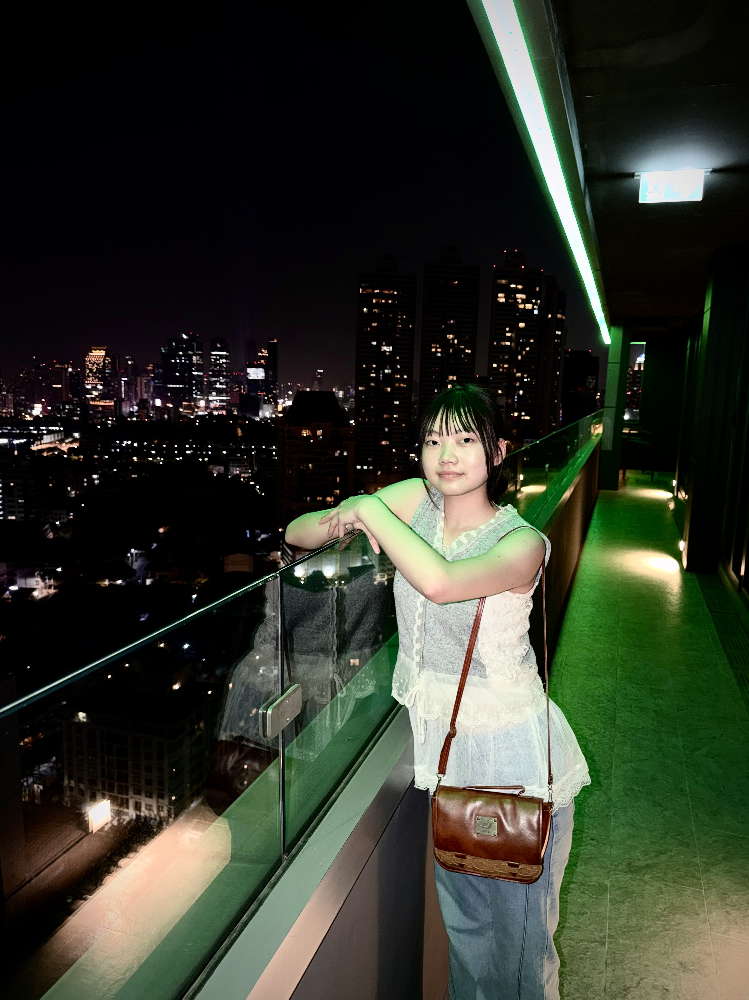
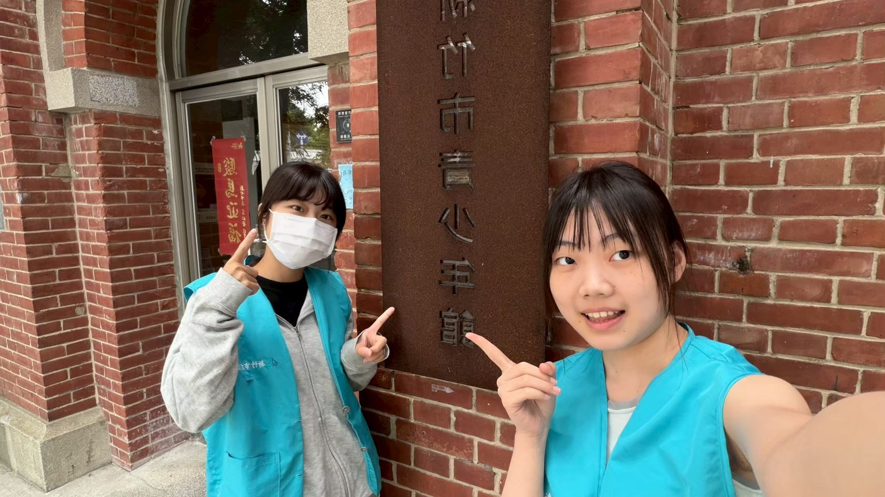

管理學服務學習｜圖書館志工

透過圖書館志工服務，學習熟悉各類書籍的分類與擺放位置，並協助民眾查找所需資源。服務過程中，除了需要細心與耐心，也提醒自己隨時保持微笑與親切態度，從日常服務中培養責任感與溝通能力。
「保持好奇，持續探索與成長。」

姓名：梁瑜臻
學校：中原大學
系級：資訊管理學系 二年級
個性：細心負責、積極主動
興趣：閱讀與文字書寫、散步與親近自然、旅行與文化交流
專長：溝通與人際互動、簡報與資訊整理、創新與創意表達
透過圖書館志工服務，學習熟悉各類書籍的分類與擺放位置，並協助民眾查找所需資源。服務過程中，除了需要細心與耐心，也提醒自己隨時保持微笑與親切態度，從日常服務中培養責任感與溝通能力。

參與 SDGs 英語簡報比賽，為了提升口語表達的流暢度，團隊反覆聆聽並模仿母語人士的發音與語調。同時，針對簡報內容進行多次修改與練習，精準掌握報告時間。透過這次經驗，我學會在有限時間內兼顧內容品質、表達方式與團隊默契。

參與社團迎新活動籌備，與其他幹部共同討論活動內容、分組方式及場地動線規劃，逐步擬定完整的活動流程。活動結束後，也透過團隊檢討發現流程中仍有改善空間，讓我體會到活動規劃不只是完成當下任務，更需要從執行經驗中持續調整與進步。